9. 常规图块背景
图块地图介绍
图块地图（tilemaps）是 GBA 的面包和黄油。几乎每个商业 GBA 游戏都使用图块模式，只有在类似 3D、使用光线追踪的游戏中才会看到位图模式。其他一切用的都是图块图形。
图块地图如此流行，是因为它们由硬件实现，并且比位图图形占用更少空间。考虑 fig 9.1a。这是一张 512×256 的图像，即使在 8bpp 下也要占用 128 KiB 的 VRAM，而我们根本没有那么多。如果你为游戏中的普通关卡制作一张大位图，很容易就能达到 1000×1000 像素，这根本不现实。然后还有在关卡中滚动的问题，这意味着每帧都要更新所有像素。即使你的滚动代码完全优化，那也要花相当多时间。
现在，注意这张图像中有许多重复的元素。位图似乎被分成了 16×16 像素的组。这些就是图块（tiles）。唯一图块的列表就是图块集（tileset），见 fig 9.1b。如你所见，构成这张图像的唯一图块只有 16 个。要用这些图块创建图像，我们需要一个图块地图（tilemap）。图像被分成一个图块矩阵。矩阵中的每个元素有一个图块索引（tile index），指示那里应渲染哪个图块；图块地图见 fig 9.1c。
假设图块集和地图都使用 8 位条目，大小就是 16×(16×16) = 4096 字节用于图块集，以及 32×16 = 512 字节用于图块地图。所以整个场景是 4.5 KiB，而不是之前的 128 KiB；大小缩减了 28 倍。
|
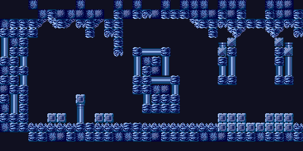 Fig 9.1a: image on screen. | |
| 图块映射过程。使用 fig 9.1b 的图块集与 fig 9.1c 的图块地图， 最终得到 fig 9.1a。 | |
|
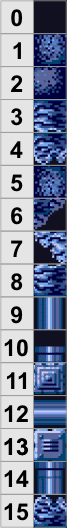 Fig 9.1b: the tile set. |
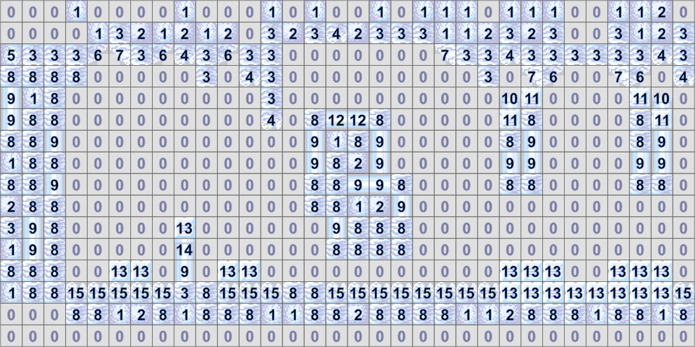 Fig 9.1c: the tile map (with the proper tiles as a backdrop). |
那基本上就是图块地图的工作方式。你不是定义整张图像，而是把像素分组为图块，并用这些组来描述图像。在 fig 9.1 中，图块是 16×16 像素，所以图块地图比位图小 256 倍。唯一图块在图块集中，它（通常也会）比图块地图大。图块集的大小可以变化：如果位图变化很大，你大概会有很多唯一图块；如果图形已经很好地对齐到图块边界（就像这里），图块集就会很小。这就是为什么图块引擎往往有独特的外观。
GBA 的图块地图
在图块视频模式（0、1 和 2）中，你最多可以有四个显示图块地图的背景。地图的大小由控制寄存器设定，可以在 128×128 到 1024×1024 像素之间。每个图块的大小始终是 8×8 像素，所以 fig 9.1 并不完全是 GBA 上的工作方式。因为访问图块地图是以图块为单位进行的，地图大小对应 16×16 到 128×128 个图块。
图块和图块地图都存储在 VRAM 中，VRAM 被划分为字符块（charblocks）和屏幕块（screenblocks）。图块集存储在字符块中，图块地图进入屏幕块。在常用说法中，“tile”这个词既用于图形图块，也用于图块地图的条目。因为这有点令人困惑，我将使用术语屏幕条目（SE，screen entry 的缩写）来指代屏幕块中的项（即地图条目），而把“图块”限制为图块集。
64 KiB 的 VRAM 被留出给图块地图（0600:0000h-0600:FFFFh）。这同时用于屏幕块和字符块。你可以通过控制寄存器自由选择用哪些，但要小心它们不要重叠（见 table 9.1）。每个屏幕块长 2048（800h）字节，总共给出 32 个屏幕块。除了最小的背景外，所有背景都使用多个屏幕块来存放完整的图块地图。每个字符块长 16 KiB（4000h 字节），总共四个块。
| Memory | 0600:0000 | 0600:4000 | 0600:8000 | 0600:C000 | ||||||||
|---|---|---|---|---|---|---|---|---|---|---|---|---|
| charblock | 0 | 1 | 2 | 3 | ||||||||
| screenblock | 0 | … | 7 | 8 | … | 15 | 16 | … | 23 | 24 | … | 31 |
图块 vs “图块”
图块地图的条目和图块集中的数据常常都被称为“图块”，这会让交流变得混乱。我把“图块”一词保留给图形，而用“屏幕（块）条目”或“地图条目”来指代地图的内容。
字符块 vs 屏幕块
字符块和屏幕块在内存中使用相同的地址。每个字符块与八个屏幕块重叠。加载数据时，确保图块本身不会覆盖地图，反之亦然。
尺寸是使用图块地图的好处之一，速度则是另一个。图块地图的渲染是在硬件中完成的，如果你曾在硬件和软件模式下玩过 PC 游戏，你就会知道硬件更好。另一个好点是滚动也是在硬件中完成的。你不需要重绘整个场景，只需要把一些坐标写进正确的寄存器。
正如我在概述中所说，设置图块背景有三个阶段：控制、映射和图像数据。图像数据的大部分我已经在概述里讲过了，以及精灵和背景共有的部分控制和映射内容；本章只讲一般背景、特别是常规背景特有的东西。我假设你已经读过概述。
图块地图的基本步骤
- 加载图形：把图块放进字符块，把颜色放进背景调色板。
- 把一个地图加载进一个或多个屏幕块。
- 在
REG_DISPCNT中切换到正确的模式，并激活一个背景。 - 初始化背景的控制寄存器，以使用正确的 CBB、SBB 和位深。
背景控制
背景类型
就像精灵一样，图块背景有两种类型：常规（regular）和仿射（affine）；它们也分别被称为文本（text）和旋转（rotation）背景。背景的类型取决于视频模式（见 table 9.2）。在核心上，常规和仿射背景的工作方式相同：你有图块、一个图块地图和几个控制寄存器。但相似之处仅此而已。仿射背景使用的寄存器比常规背景更多且不同，甚至连地图的格式也不同。本页只讲常规背景。我会把仿射背景留到仿射矩阵那页之后。
| mode | BG0 | BG1 | BG2 | BG3 |
|---|---|---|---|---|
| 0 | reg | reg | reg | reg |
| 1 | reg | reg | aff | - |
| 2 | - | - | aff | aff |
控制寄存器
所有背景都有 3 个主要控制寄存器。主控制寄存器是 REG_BGxCNT，其中 x 表示背景 0 到 3。在这个寄存器中，你要说明图块地图的大小是多少，以及它使用哪个字符块和屏幕块。另外两个是滚动寄存器 REG_BGxHOFS 和 REG_BGxVOFS。
这些每个都是 16 位寄存器。REG_BG0CNT 位于 0400:0008，其他控制寄存器紧随其后。这些偏移量按背景成对出现，形成坐标对。它们从 0400:0010 开始。
| Register | length | address |
|---|---|---|
| REG_BGxCNT | 2 | 0400:0008h + 2·x |
| REG_BGxHOFS | 2 | 0400:0010h + 4·x |
| REG_BGxVOFS | 2 | 0400:0012h + 4·x |
REG_BGxCNT 的描述见下。其中大部分相当标准，除了大小：实际上有两份可能的尺寸列表；一份给常规地图，一份给仿射地图。它们用的是相同的位，你可能需要小心用的是正确的 #define。
| F E | D | C B A 9 8 | 7 | 6 | 5 4 | 3 2 | 1 0 |
| Sz | Wr | SBB | CM | Mos | - | CBB | Pr |
| bits | name | define | description |
|---|---|---|---|
| 0-1 | Pr | BG_PRIO# | 优先级（Priority）。决定背景的绘制顺序。 |
| 2-3 | CBB | BG_CBB# | 字符基块（Character Base Block）。设定作为 字符/图块索引基址的字符块。取值：0-3。 |
| 6 | Mos | BG_MOSAIC | 马赛克（Mosaic）标志。启用马赛克效果。 |
| 7 | CM | BG_4BPP, BG_8BPP | 颜色模式（Color Mode）。若清零为 16 色（4bpp）； 若置位为 256 色（8bpp）。 |
| 8-C | SBB | BG_SBB# | 屏幕基块（Screen Base Block）。设定作为 屏幕条目/地图索引基址的屏幕块。取值：0-31。 |
| D | Wr | BG_WRAP | 仿射环绕（Affine Wrapping）标志。若置位，仿射背景在 其边缘环绕。对常规背景无效，因为它们默认就环绕。 |
| E-F | Sz | BG_SIZE#, 见下 | 背景大小（Background Size）。常规和仿射背景可用的 大小不同。以图块计和以像素计的大小可在 table 9.4 中找到。 |
| Sz-flag | define | (tiles) | (pixels) |
|---|---|---|---|
| 00 | BG_REG_32x32 | 32×32 | 256×256 |
| 01 | BG_REG_64x32 | 64×32 | 512×256 |
| 10 | BG_REG_32x64 | 32×64 | 256×512 |
| 11 | BG_REG_64x64 | 64×64 | 512×512 |
| Sz-flag | define | (tiles) | (pixels) |
|---|---|---|---|
| 00 | BG_AFF_16x16 | 16×16 | 128×128 |
| 01 | BG_AFF_32x32 | 32×32 | 256×256 |
| 10 | BG_AFF_64x64 | 64×64 | 512×512 |
| 11 | BG_AFF_128x128 | 128×128 | 1024×1024 |
每个背景有两个 16 位的滚动寄存器来偏移渲染（REG_BGxHOFS 和 REG_BGxVOFS）。关于它们有几点有趣的地方。首先，因为常规背景会环绕，这些值本质上是按地图大小取模。眼下这不太要紧，但你以后做更高级的图块地图时可以善加利用。其次，这些寄存器是只写的！这有点烦人，因为它意味着你不能简单地通过 REG_BG0HOFS++ 之类来更新位置。
现在是第三部分，可能是最重要的，即这些值的实际作用。最简单的看法是，它们给出屏幕在地图上的坐标。再仔细读一遍：是屏幕在地图上的位置。它不是地图在屏幕上的位置，那是精灵的工作方式。区别仅在一个负号，但即使这么小的符号改变也能严重破坏你的计算。
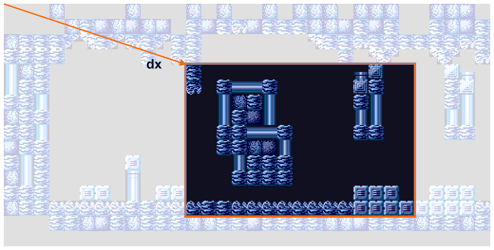
Fig 9.2: 滚动偏移 dx 设定的是屏幕 在地图上的位置。本例中，dx = (192, 64)。
所以，如果你增大滚动值，你就把屏幕向右移，这对应地图在屏幕上向左移。用数学术语说，如果你有地图位置 p 和屏幕位置 q，那么下面这个式子成立：
| (9.1) |
偏移寄存器的方向
偏移寄存器 REG_BGxHOFS 和 REG_BGxVOFS 指示哪个地图位置被映射到屏幕的左上角，也就是说，正偏移会让地图向左和向上滚动。注意你的负号。
偏移寄存器是只写的
偏移寄存器是只写的！这意味着像 += 这样的直接算术不会起作用。
有用的类型和 #defines
Tonc 的代码有几个有用的额外类型和宏，能让生活轻松一点。
// === Additional types (tonc_types.h) ================================
//! Screen entry conceptual typedef
typedef u16 SCR_ENTRY;
//! Affine parameter struct for backgrounds, covered later
typedef struct BG_AFFINE
{
s16 pa, pb;
s16 pc, pd;
s32 dx, dy;
} ALIGN4 BG_AFFINE;
//! Regular map offsets
typedef struct BG_POINT
{
s16 x, y;
} ALIGN4 BG_POINT;
//! Screenblock struct
typedef SCR_ENTRY SCREENBLOCK[1024];
// === Memory map #defines (tonc_memmap.h) ============================
//! Screen-entry mapping: se_mem[y][x] is SBB y, entry x
#define se_mem ((SCREENBLOCK*)MEM_VRAM)
//! BG control register array: REG_BGCNT[x] is REG_BGxCNT
#define REG_BGCNT ((vu16*)(REG_BASE+0x0008))
//! BG offset array: REG_BG_OFS[n].x/.y is REG_BGnHOFS / REG_BGnVOFS
#define REG_BG_OFS ((BG_POINT*)(REG_BASE+0x0010))
//! BG affine params array
#define REG_BG_AFFINE ((BG_AFFINE*)(REG_BASE+0x0000))
严格来说，做一个 SCREEN_ENTRY 的 typedef 并非必要，但能让它的用途更清晰。se_mem 的工作方式很像 tile_mem：它把 VRAM 按屏幕块和屏幕条目映射出来，让查找特定条目更容易。其他 typedef 用于为后台寄存器映射出数组。例如，REG_BGCNT 是一个映射出所有 REG_BGxCNT 寄存器的数组。REG_BGCNT[0] 是 REG_BG0CNT，等等。BG_POINT 和 BG_AFFINE 类型也以类似方式使用。注意 REG_BG_OFS 仍然覆盖了与 REG_BGxHOFS 和 REG_BGxVOFS 相同的寄存器，它们“只写”的特性并没有神奇地消失。REG_BG_AFFINE 也一样，但那个讨论留到以后。
理论上，创建一个背景 API 也很有用，用一个结构体保存地图定位的临时变量，以及用于初始化和更新寄存器与地图的函数。不过，tonc 的大多数演示还没复杂到需要这些东西。有了上面的类型，操作必要的项已经足够简化了。
常规背景图块地图
屏幕块构成了一个屏幕条目矩阵，描述了屏幕上的完整图像。在 fig 9.1 的例子中，图块地图条目只包含图块索引。GBA 的屏幕条目表现略有不同。
对于常规图块地图，每个屏幕条目长 16 位。除了图块索引，它还包含翻转标志，以及用于 4bpp / 16 色图块的调色板库索引。确切的布局见下面的“屏幕条目格式”。仿射屏幕条目只有 8 位宽，只包含一个 8 位的图块索引。
| F E D C | B | A | 9 8 7 6 5 4 3 2 1 0 |
| PB | VF | HF | TID |
| bits | name | define | description |
|---|---|---|---|
| 0-9 | TID | SE_ID# | 图块索引（Tile-index）of the SE. |
| A-B | HF, VF | SE_HFLIP, SE_VFLIP. SE_FLIP# | 水平/垂直翻转（Horizontal/vertical flipping）标志。 |
| C-F | PB | SE_PALBANK# | 调色板库（Palette bank），在 16 色模式下使用。对于 256 色背景
（REG_BGxCNT{6} 被置位）无效。
|
地图布局
VRAM 包含 32 个屏幕块来存放图块地图。每个屏幕块长 800h 字节，所以你能往里塞 32×32 个屏幕条目，等于一张 256×256 像素的地图。更大的地图只是使用多个屏幕块。在 REG_BGxCNT 中设定的屏幕块索引是屏幕基块（screen base block），指示图块地图的起始位置。
现在，假设你有一个大小为 tw×th 个图块/SE 的图块地图。你可能期望图块坐标 (tx, ty) 处的屏幕条目可以在 SE 编号 n = tx+ty·tw 处找到，因为矩阵总是这样工作的，对吧？嗯，你错了。至少，你部分错了。
在每个屏幕块内部，方程成立，但更大的背景并不只是使用多个屏幕块，它们实际上是作为四个独立的地图被访问的。这是如何运作的，可见 table 9.5：每个编号的块是内存中连续的一块。这意味着要找出 SE 索引，你必须先弄清楚你在哪个屏幕块里，然后找出那个屏幕块内的 SE 编号。
| 32×32 | 64×32 | 32×64 | 64×64 | |||||||||
|---|---|---|---|---|---|---|---|---|---|---|---|---|
|
|
|
|
这种嵌套问题并不像看起来那么难。我们知道一个屏幕块能装下多少图块，所以要找出 SBB 坐标，我们只需把图块坐标除以 SBB 的宽和高：sbx=tx/32 和 sby=ty/32。然后可以用标准的矩阵→数组公式找出 SBB 编号。要找出屏幕块内的 SE 编号，我们要用 tx%32 和 ty%32 找出屏幕块内的坐标，然后再次把 2D 坐标转换成单个元素。这还要加上 SBB 编号乘以一个 SBB 大小的图块数，以得出最终编号。最终形式是：
//! Get the screen entry index for a tile-coord pair
// And yes, the div and mods will be converted by the compiler
uint se_index(uint tx, uint ty, uint pitch)
{
uint sbb= (ty/32)*(pitch/32) + (tx/32);
return sbb*1024 + (ty%32)*32 + tx%32;
}
一般公式留作读者的练习——在我看来这绝对值得花力气。这种过程在好几个地方都会出现，比如找出图块坐标在图块中的位图坐标偏移，以及 1D 对象映射中的图块坐标。
如果所有这些操作让你犯晕，还有一个专门针对 2×2 排列的更快版本。它先按 32×32t 地图计算出编号。对于 64t 宽的地图这会不正确，我们可以通过加上 0x0400−0x20（即每块图块数 − 每行图块数）来修正。对于 64×64t 的大小，我们还需要再修正一个完整的块。
//! Get the screen entry index for a tile-coord pair.
/*! This is the fast (and possibly unsafe) way.
* \param bgcnt Control flags for this background (to find its size)
*/
uint se_index_fast(uint tx, uint ty, u16 bgcnt)
{
uint n= tx + ty*32;
if(tx >= 32)
n += 0x03E0;
if(ty >= 32 && (bgcnt&BG_REG_64x64)==BG_REG_64x64)
n += 0x0400;
return n;
}
我要提醒你，这里的 n 是 SE 编号，不是地址。因为常规 SE 的大小是 2 字节，要得到地址你需要把 n 乘以 2。（当然，除非你有一个 u16 的指针/数组，那样 n 就能直接用。）而且，这只适用于常规背景；仿射背景使用线性地图结构，在那里不需要这些额外的工作。顺便说一句，屏幕条目和地图布局对仿射背景也是不同的。它们的格式见仿射背景页的地图格式一节。
背景图块精妙之处
使用图块做图块地图时，还有两件额外的事你需要知道。第一件关乎图块编号。对于精灵，编号是按 4 位图块（s-tiles）来的；对于 8 位图块（d-tiles），你得用 2 的倍数（有点像内存中 u16 地址总是 2 的倍数）。但在图块地图中，d-tiles 是按 d-tile 编号的。换句话说，对于精灵，使用索引 id 对 4 位和 8 位图块都指示同一个图块，即那个从 id·20h 开始的图块。但对于图块地图，4 位图块是从 id·20h 开始，而 8 位图块是从 id·40h 开始。
| memory offset | 000h | 020h | 040h | 060h | 080h | 100h | ... |
|---|---|---|---|---|---|---|---|
| 4bpp tile | 0 | 1 | 2 | 3 | 4 | 5 | ... |
| 8bpp tile | 0 | 1 | 2 | ... | |||
第二件也关乎图块编号，但更多是讲你能用多少图块。常规背景的每个地图条目有 10 位用于图块索引，所以你最多能用 1024 个图块。然而，简单计算一下就发现一个字符块包含 4000h/20h= 512 个 s-tiles，或 4000h/40h= 256 个 d-tiles。那么这是怎么回事？嗯，你在 REG_BGxCNT 中设定的字符块索引，实际上只是图块计数开始的地方：它的字符基块（character base block）。你也可以使用它后面的块。酷吧？但是等等，如果你能访问后续的字符块；这是否意味着，如果你把基字符块设为 3，你也能使用精灵块（本质上就是块 4 和 5）？
答案是：能。也不能！
2000 年代初的模拟器允许你这么做。然而，真正的 GBA 不允许。它确实会输出某种东西：屏幕条目本身会被当作图块数据使用，但方式实在无法解释。相信我这一次，好吗？在当前的 tonc 演示中，这是 VBA 出错的情形之一。
可用的图块
对于 4bpp 和 8bpp 的常规背景，你都能访问 1024 个图块。这里唯一的注意事项是，即使索引会要求，你也不能访问对象字符块中的图块。
你可能还在想的另一件事是：你能否使用一个刚好在当前所用字符块之内的特定屏幕块。例如，是否允许让一个背景使用字符块 0 和屏幕块 1。再一次，是的，你能这么做。这很有用，因为你不太可能填满整个字符块，所以把它的后部分屏幕块用于你的地图数据是個好主意。（真正黑客的标记，是如果你能成功把同一份数据既用作图块又用作 SE，并且仍然得到一幅有意义的图像（这最后一部分很重要）。如果你做到了，请告诉我。）
通过 CLI 转换图块地图数据
一个能为（对象）图像做图块化的转换器，也能为图块地图创建图块集，尽管可能会有很多冗余图块。少数转换器还能把图块集精简为只有唯一图块，并提供配套的图块地图。fig 9.1 中的 Brinstar 位图是一张 512×256 的图像，可以被图块化为 64×32 的地图，并带有为唯一性精简过的 4bpp 图块集，包括调色板信息和镜像。
# gfx2gba
# (C array; u8 foo_Tiles[], u16 foo_Map[],
# u16 master_Palette[]; foo.raw.c, foo.map.c, master.pal.c)
gfx2gba -fsrc -c16 -t8 -m foo.bmp
# grit
# (C array; u32 fooTiles[], u16 fooMap[], u16 fooPal[]; foo.c, foo.h)
grit foo.bmp -gB4 -mRtpf
关于 gfx2gba 有两点说明：第一，它把调色板合并成单一的 16 色数组，在这个过程中重新排了序。第二，虽然它在 readme 里列出了元映射（metamapping）选项，它实际上并不给出元地图和元图块集，只是把地图格式化成不同的块。
图块地图演示
本章有四个演示。第一个是 brin_demo，非常非常短，展示了图块加载和滚动的基本步骤。接下来两个叫 sbb_reg 和 cbb_demo，是技术演示，说明了多个屏幕块的布局，以及 4bpp 和 8bpp 背景上的图块索引是如何完成的。在这两个例子中，地图数据是手工创建的，因为这里手工创建更方便，但使用地图编辑器创建的地图数据其实也没什么不同。
图块地图基本步骤：brin_demo
既然我在本章里一直用 Brinstar 的 512×256 一部分，我想不妨用它做个演示。
有几个地图编辑器你可以选用。两个好的是 Nessie 的 MapEd 或 Mappy，两者都有一些有趣的特性。我自己也有一个地图编辑器，mirach，但它只是个非常基础的东西。有些教程可能指向 GBAMapEditor。不要用这个编辑器，因为它相当有 bug，有时会把半个图块地图漏掉。对初学者来说，图块地图已经够麻烦的了，不必再担心地图数据是否有错。
不过在本例中，我根本没用任何编辑器。一些图形转换器能把图像转换成图块集+图块地图——这不是标准方法，但对小地图来说可能更容易。本例中我用了 Usenti 来做，但 grit 和 gfx2gba 一样好用。注意，因为这里的地图是 64×32 个图块，需要拆分成屏幕块。在 Usenti 中这叫‘sbb’布局，在 grit 中是‘-mLs’，对 gfx2gba 你大概要用‘-mm 32’……我想。无论如何，转换之后你会得到调色板、图块集和图块地图。
|
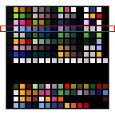 Fig 9.3a: brin_demo palette. |
|
|
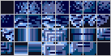 Fig 9.3b: brin_demo tileset. |
在 fig 9.3 中你可以看到完整的调色板、图块集和地图的一部分。注意 fig 9.3b 的图块集与 fig 9.1b 的不同，因为前者用的是 8×8 图块，而后者用的是 16×16 图块。还要注意你在这里看到的屏幕条目要么是 0（即空图块），要么是 0x3xxx 的形式。高 nybble 指示调色板库，本例中是 3。如果你去看调色板（fig 9.3a），你会看到那给出偏蓝的颜色。
现在来使用这些数据。记住这里的基本步骤：
- 加载图形：把图块放进字符块，把颜色放进背景调色板。
- 把一个地图加载进一个或多个屏幕块。
- 在
REG_DISPCNT中切换到正确的模式，并激活一个背景。 - 初始化背景的控制寄存器，以使用正确的 CBB、SBB 和位深。
如果你做对了，屏幕上就应该有东西显示。如果没有，去打开你模拟器的图块/地图/内存查看器；它们通常会很好地提示问题在哪里。一个常见的问题是 REG_BGxCNT 中的 CBB 和 SBB 与你放置数据的地方不匹配，这最可能让你得到一张空地图或空图块集。
brin_demo 的完整代码如下。三次对 memcpy() 的调用加载了调色板、图块集和图块地图。出于某种原因——大概与 NES 和 8 位 Game Boy 把屏幕块放在视频内存的哪里有关——把地图放在 GBA 最后的屏幕块里已经成了惯例。本例中是 30 而不是 31，因为我们需要两个块来放 64×32t 的地图。对于滚动部分，我用了两个变量来存储和更新位置，因为滚动寄存器是只写的。我这里从 (192, 64) 开始，因为那是我之前用于 fig 9.2 滚动图的位置。
#include <string.h>
#include "toolbox.h"
#include "input.h"
#include "brin.h"
int main()
{
// Load palette
memcpy(pal_bg_mem, brinPal, brinPalLen);
// Load tiles into CBB 0
memcpy(&tile_mem[0][0], brinTiles, brinTilesLen);
// Load map into SBB 30
memcpy(&se_mem[30][0], brinMap, brinMapLen);
// set up BG0 for a 4bpp 64x32t map, using
// using charblock 0 and screenblock 31
REG_BG0CNT= BG_CBB(0) | BG_SBB(30) | BG_4BPP | BG_REG_64x32;
REG_DISPCNT= DCNT_MODE0 | DCNT_BG0;
// Scroll around some
int x= 192, y= 64;
while(1)
{
vid_vsync();
key_poll();
x += key_tri_horz();
y += key_tri_vert();
REG_BG0HOFS= x;
REG_BG0VOFS= y;
}
return 0;
}
|
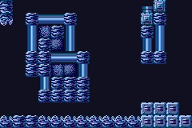 Fig 9.4a: brin_demo at dx=(192, 64). |
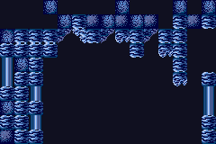 Fig 9.4b: brin_demo at dx=(0, 0). |
插曲：非 sbb 预处理的地图的快速复制
这并非必需的知识，但应该会是一段有趣的阅读。在这个演示中我用了一个已经为多 sbb 预处理过的地图。转换器确保了地图的左块排在前，右块排在后。如果不是这样，你就不能一次性加载整个地图，因为左块的 second 行会使用右块的 first 行，依此类推（见 fig 9.5）。
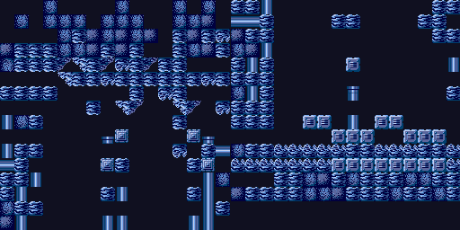
Fig 9.5 brin_demo 未先屏蔽掉 SBB 的首块。
把非 sbb 预处理的地图复制到多个屏幕块，有几种简单而慢的方法，以及一种简单而快的方法。慢的方法是执行双重循环，逐行遍历每个屏幕块。快的方法是通过结构体复制和指针算术，像这样：
typedef struct { u32 data[8]; } BLOCK;
int iy;
BLOCK *src= (BLOCK*)brinMap;
BLOCK *dst0= (BLOCK*)se_mem[30];
BLOCK *dst1= (BLOCK*)se_mem[31];
for(iy=0; iy<32; iy++)
{
// Copy row iy of the left half
*dst0++= *src++; *dst0++= *src++;
// Copy row iy of the right half
*dst1++= *src++; *dst1++= *src++;
}
一个 BLOCK 结构体复制处理半行，所以两个处理一整个屏幕块行（是的，你可以把 BLOCK 定义为一个 16 字的结构体，但那就不行了。相信我）。在那时，src 指针已经到达地图的右半部分，所以我们将下一行复制到右侧目标 dst1。完成后，src 指向左侧的第二行。现在对所有 32 行都这么做。结构体复制和指针万岁！
屏幕块演示
第二个演示 sbb_reg，用一个 64×64t 背景来更详细地说明更大的地图如何使用多个屏幕块。虽然 brin_demo 也用了多 sbb 地图，但因为地图不规则，很难看清谁是谁，而这个演示用了非常简单的图块集，所以你能清楚地看到屏幕块的边界。它还会展示如何用 REG_BG_OFS 寄存器来滚动，而不是 REG_BGxHOFS 和 REG_BGxVOFS。
#include "toolbox.h"
#include "input.h"
#define CBB_0 0
#define SBB_0 28
#define CROSS_TX 15
#define CROSS_TY 10
BG_POINT bg0_pt= { 0, 0 };
SCR_ENTRY *bg0_map= se_mem[SBB_0];
uint se_index(uint tx, uint ty, uint pitch)
{
uint sbb= ((tx>>5)+(ty>>5)*(pitch>>5));
return sbb*1024 + ((tx&31)+(ty&31)*32);
}
void init_map()
{
int ii, jj;
// initialize a background
REG_BG0CNT= BG_CBB(CBB_0) | BG_SBB(SBB_0) | BG_REG_64x64;
REG_BG0HOFS= 0;
REG_BG0VOFS= 0;
// (1) create the tiles: basic tile and a cross
const TILE tiles[2]=
{
{{0x11111111, 0x01111111, 0x01111111, 0x01111111,
0x01111111, 0x01111111, 0x01111111, 0x00000001}},
{{0x00000000, 0x00100100, 0x01100110, 0x00011000,
0x00011000, 0x01100110, 0x00100100, 0x00000000}},
};
tile_mem[CBB_0][0]= tiles[0];
tile_mem[CBB_0][1]= tiles[1];
// (2) create a palette
pal_bg_bank[0][1]= RGB15(31, 0, 0);
pal_bg_bank[1][1]= RGB15( 0, 31, 0);
pal_bg_bank[2][1]= RGB15( 0, 0, 31);
pal_bg_bank[3][1]= RGB15(16, 16, 16);
// (3) Create a map: four contingent blocks of
// 0x0000, 0x1000, 0x2000, 0x3000.
SCR_ENTRY *pse= bg0_map;
for(ii=0; ii<4; ii++)
for(jj=0; jj<32*32; jj++)
*pse++= SE_PALBANK(ii) | 0;
}
int main()
{
init_map();
REG_DISPCNT= DCNT_MODE0 | DCNT_BG0 | DCNT_OBJ;
u32 tx, ty, se_curr, se_prev= CROSS_TY*32+CROSS_TX;
bg0_map[se_prev]++; // initial position of cross
while(1)
{
vid_vsync();
key_poll();
// (4) Moving around
bg0_pt.x += key_tri_horz();
bg0_pt.y += key_tri_vert();
// (5) Testing se_index
// If all goes well the cross should be around the center of
// the screen at all times.
tx= ((bg0_pt.x>>3)+CROSS_TX) & 0x3F;
ty= ((bg0_pt.y>>3)+CROSS_TY) & 0x3F;
se_curr= se_index(tx, ty, 64);
if(se_curr != se_prev)
{
bg0_map[se_prev]--;
bg0_map[se_curr]++;
se_prev= se_curr;
}
REG_BG_OFS[0]= bg0_pt; // write new position
}
return 0;
}
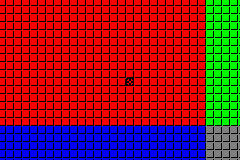
Fig 9.6：sbb_reg。 对比 table 9.5 的 64×64t 背景。 注意左上角的小十字。
init_map() 包含了所有初始化步骤：设置寄存器、图块、调色板和地图。与之前的演示不同，这里的图块、调色板和地图都是手工创建的，因为那样更简单。在第 (1) 点，我定义了两个图块。第一个看起来有点像窗格，第二个是个基础十字。你可以在截图（fig 9.4）中清楚看到它们。类窗格图块被加载到图块 0，因此它是地图的“默认”图块。
调色板在第 (2) 点设置。颜色与 table 9.5 中相同：红、绿、蓝和灰。注意我用的调色板项：这些颜色在不同的调色板库里，这样我在填充地图时就能用调色板交换。说到这个……
加载地图本身（第 (3) 点）是通过双重循环完成的。外层循环设定屏幕条的调色板库。内层循环用调色板交换过的图块-0 填充 1024 个 SE。现在，如果大地图用的是扁平布局，结果会是一张由四个色带组成的大地图。然而实际发生的是你看到的是块，而不是带，这证明了常规地图确实像 table 9.5 说的那样被拆分成了屏幕块。是的，这很烦人，但事情就是这样。
那是在创建地图，现在我们转向 main() 中的主循环。按键（第 (4) 点）让你在地图上滚动。RIGHT 按钮与 x 的正向变化绑定，但地图本身实际上是向左滚动的！我这么说可能显得反直觉，但如果你看演示就会发现这其实讲得通。从一个假想玩家精灵的角度想。当精灵在世界里移动时，你需要更新背景，以免精灵跑出屏幕。为此，背景的移动应该与精灵的移动相反。例如，如果精灵向右移动，你必须把背景向左移来补偿。
最后，还有一件事要讨论：那个在地图中央显示的十字。为了在滚动时做到这一点，我通过一些变量和 se_index() 函数追踪屏幕中央的屏幕条目。变量 tx 和 ty 是屏幕中央的图块坐标，通过对背景像素坐标移位和掩码得到。把它们喂给 se_index() 就给出从屏幕基块开始的屏幕条目偏移。如果这与前一个偏移不同，我把前一个偏移重绘为窗格，并把新偏移更新为十字。这样，十字看起来就像在地图上移动；很像精灵那样。这其实是为 se_index() 设计的一个测试；如果函数有缺陷，十字会在某处消失。但它没有。 yay me ^_^
字符块演示
第三个演示 cbb_demo，涵盖了字符块的一些细节，以及 4bpp 和 8bpp 图块的区别。涉及到的背景是 BG 0 和 BG 1。两者都是 32×32t 背景，但 BG 0 使用 4bpp 图块和 CBB 0，BG 1 使用 8bpp 图块和 CBB 2。屏幕块的确切位置和内容不重要；重要的是把图块加载到全部 6 个字符块的起始处，看看会发生什么。
#include <toolbox.h>
#include "cbb_ids.h"
#define CBB_4 0
#define SBB_4 2
#define CBB_8 2
#define SBB_8 4
void load_tiles()
{
int ii;
TILE *tl= (TILE*)ids4Tiles;
TILE8 *tl8= (TILE8*)ids8Tiles;
// Loading tiles. don't get freaked out on how it looks
// 4-bit tiles to blocks 0 and 1
tile_mem[0][1]= tl[1]; tile_mem[0][2]= tl[2];
tile_mem[1][0]= tl[3]; tile_mem[1][1]= tl[4];
// and the 8-bit tiles to blocks 2 though 5
tile8_mem[2][1]= tl8[1]; tile8_mem[2][2]= tl8[2];
tile8_mem[3][0]= tl8[3]; tile8_mem[3][1]= tl8[4];
tile8_mem[4][0]= tl8[5]; tile8_mem[4][1]= tl8[6];
tile8_mem[5][0]= tl8[7]; tile8_mem[5][1]= tl8[8];
// And let's not forget the palette (yes, obj pal too)
u16 *src= (u16*)ids4Pal;
for(ii=0; ii<16; ii++)
pal_bg_mem[ii]= pal_obj_mem[ii]= *src++;
}
void init_maps()
{
// se4 and se8 map coords: (0,2) and (0,8)
SB_ENTRY *se4= &se_mem[SBB_4][2*32], *se8= &se_mem[SBB_8][8*32];
// show first tiles of char-blocks available to bg0
// tiles 1, 2 of char-block CBB_4
se4[0x01]= 0x0001; se4[0x02]= 0x0002;
// tiles 0, 1 of char-block CBB_4+1
se4[0x20]= 0x0200; se4[0x21]= 0x0201;
// show first tiles of char-blocks available to bg1
// tiles 1, 2 of char-block CBB_8 (== 2)
se8[0x01]= 0x0001; se8[0x02]= 0x0002;
// tiles 1, 2 of char-block CBB_8+1
se8[0x20]= 0x0100; se8[0x21]= 0x0101;
// tiles 1, 2 of char-block CBB_8+2 (== CBB_OBJ_LO)
se8[0x40]= 0x0200; se8[0x41]= 0x0201;
// tiles 1, 2 of char-block CBB_8+3 (== CBB_OBJ_HI)
se8[0x60]= 0x0300; se8[0x61]= 0x0301;
}
int main()
{
load_tiles();
init_maps();
// init backgrounds
REG_BG0CNT= BG_CBB(CBB_4) | BG_SBB(SBB_4) | BG_4BPP;
REG_BG1CNT= BG_CBB(CBB_8) | BG_SBB(SBB_8) | BG_8BPP;
// enable backgrounds
REG_DISPCNT= DCNT_MODE0 | DCNT_BG0 | DCNT_BG1 | DCNT_OBJ;
while(1);
return 0;
}
图块集可以在 cbb_ids.c 中找到。每个图块包含两个数字：一个是我把它放入的字符块，一个是在那个块中的图块索引。例如，我想放进字符块 0、图块 1 的图块显示‘01’，CBB 1 图块 0 显示‘10’，CBB 1 图块 1 显示‘11’，等等。我总共有十二个图块，4 个 s-tiles 用于 BG 0，8 个 d-tiles 用于 BG 1。
现在，我有六对图块，打算把它们放在 6 个字符块每个的第一个图块里（CBB 0 和 2 除外，因为图块 0 会被用作背景的默认图块，我想让它保持空）。是的，六个，我连精灵字符块也加载了。我可以手工做，手动计算所有地址（0600:0020 是 CBB 0 图块 1 等），并希望我不会犯错，且以后重看演示时还记得自己在做什么，或者我也可以直接用我的 tile_mem 和 tile8_mem 内存映射矩阵，快速而无忧地得到地址。更好的是，C 允许结构体赋值，所以我可以用一个简单的赋值来加载单个图块！这正是我在 load_tiles() 里做的。源图块被转换成 TILE 和 TILE8 数组，分别用于 4bpp 和 8bpp 图块。之后，加载图块就非常简单了。
地图本身在 init_maps() 中创建。本演示我唯一感兴趣的是展示哪些字符块、如何被使用，所以地图的细节并不那么重要。我唯一想让它们做的，是能显示出我在 load_tiles() 中加载的图块。我在这里创建的两个指针 se4 和 se8，分别指向用于 BG 0 和 BG 1 的屏幕块中的屏幕条目。BG 0 的地图包含 s-tiles，使用 1 和 512 偏移；BG 1 的条目是 8bpp 图块，带 1 和 256 偏移。如果我之前说的不同位深下的图块索引是对的，那么你应该能看到所有加载图块的内容。看着演示的结果（fig 9.7），看来我的数学是正确的：背景图块索引遵循该背景分配的位深，这与精灵总是按 32 字节偏移计数相反。
不过，有一点值得关注：在硬件上，你不会看到实际在对象 VRAM（块 4 和 5）中的图块。虽然你可能期望由于地址的关系能用精灵块做背景，但 GBA 内部的实际布线似乎禁止了这一点。这就是为什么在硬件上测试很重要：模拟器并不总是完美的。但如果你无法进行硬件测试，就在多个模拟器上测试；如果你看到不同的行为，要对产生它的代码保持警惕。
|
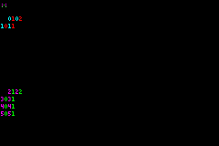 Fig 9.7a：cbb_demo 在 过时的模拟器上（如 VBA 与 Boycott Adv）。 |
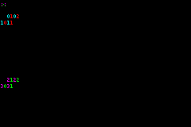 Fig 9.7b: cbb_demo on hardware. Spot the differences! |
额外演示：文本背景中的“text”以及 libtonc 介绍
呜，额外演示！这个例子有几个用途。第一个是介绍 libtonc，一个让 GBA 上生活更轻松的代码库。在过去的演示里，我一直在用 toolbox.h/c 来存放有用的宏和函数。这对非常小的项目没问题，但随着代码增加，维护一切会变得非常困难。把通用功能存放在可以在项目间共享的库里更好。
第二个理由是展示如何输出文本，这显然是一项重要的能力。Tonclib 有一长串文本渲染选项——太多，这里解释不完——但它的接口相当简单。详情请访问 Tonc 文本引擎章节。
总之，这是例子。
#include <stdio.h>
#include <tonc.h>
int main()
{
REG_DISPCNT= DCNT_MODE0 | DCNT_BG0;
// Init BG 0 for text on screen entries.
tte_init_se_default(0, BG_CBB(0)|BG_SBB(31));
tte_write("#{P:72,64}"); // Goto (72, 64).
tte_write("Hello World!"); // Print "Hello world!"
while(1);
return 0;
}
|
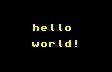 Fig 9.8a: hello demo. |
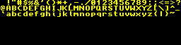 Fig 9.8b: tileset of the hello demo. |
是的，这确实是一个“hello world”演示，几乎是每个入门 C/C++ 教程的起点。然而，那些通常针对 PC 平台，它们有原生的控制台功能如 printf() 或 cout。这些在 GBA 上不存在。（或者我该说“过去不存在”；如今有办法利用它们了。详见 tte:conio。）
Tonc 对文本的支持通过 tte_ 函数。本例中，tte_init_se_default() 为基于图块地图的文本初始化背景 0。它还会把默认的 8×8 字体加载进字符块 0（见 fig 9.8b）。之后，你可以用 tte_write 写文本。序列 #{P:x,y} 是 TTE 用来定位光标的格式命令。这类命令有好几个，其中一些你也会在后面的章节看到。
从现在起，我会在示例里大量使用 libtonc 的文本能力来显示数值之类的东西。这通常不会附带解释，因为那不属于演示内容。再次说明，要看内部细节，请去 TTE 章节。
创建和使用代码库
使用函数本身相当简单，但它们分散在多个文件中，并且引用更多文件。这让找出需要把哪些文件加入编译项目的源文件列表变得麻烦。你当然可以把一切都加进去，但那也不是个令人愉快的前景。最好的解决方案是把实用代码预编译成一个库。
库本质上是目标文件的集群。你不是直接把目标文件链接成可执行文件，而是用 arm-none-eabi-ar 把它们归档（archive）。命令也类似于链接步骤。下面是你如何用对象 foo.o、bar.o 和 baz.o 创建库 libfoo.a 的方法。
# archive rule
libfoo : foo.o bar.o baz.o
arm-none-eabi-ar -crs libfoo.a foo.o bar.o baz.o
# shorthand rule: $(AR) rcs $@ $^
这三个标志分别代表create archive（创建归档）、replace member（替换成员）和创建symbol table（符号表）。关于这些和其他归档标志的更多信息，我请你去查阅手册，它是 binutils 工具集的一部分。标志后面跟着库名，再后面是所有对象（你想归档的“成员”）。
要使用库，你得把它链接到可执行文件。这里有两个感兴趣的链接器标志：-L 和 -l。大写和小写的“L”。前者 -L 添加一个库路径。小写版本 -l 添加实际的库，但有个转折：你只需要库的根名。例如，要链接库 libfoo.a，用 -lfoo。前缀 lib 和后缀 .a 由链接器假定。
# using libfoo (assume it's in ../lib)
$(PROJ).elf : $(OBJS)
$(LD) $^ $(LDFLAGS) -L../lib -lfoo -o $@
当然，如果你往里塞很多东西，这些归档会变得相当大。你可能想知道，当你把一个库加入项目时，是不是所有东西都被链接了。答案是否定的。链接器足够聪明，只使用你实际引用的函数所在的文件。在本演示的情况下，例如，我用了各种文本函数，但没有用任何仿射函数或表，所以那些被排除在外。注意，排除是按文件而非按函数进行的。如果你的库里只有一个文件（或者把一切 #include 了，效果一样），那么一切都会被链接。
我打算在后面的几个演示里用 libtonc。特别是内存映射、文本和复制例程会经常出现。不必担心它们对演示做了什么；只要关注核心内容本身。libtonc 的文档可以在 libtonc 文件夹（tonc/code/libtonc）以及 Tonclib 的网站找到。
更好的复制和填充例程：memcpy16/32 和 memset16/32
既然我把 libtonc 作为文本例程的库来用，那不如也把它用于复制和填充例程。它们的名字是复制用的 memcpy16() 和 memcpy32()，以及填充用的 memset16() 和 memset32()。16 和 32 表示它们偏好的数据类型：分别是半字和字。它们的参数与常规的 memcpy() 和 memset() 相似，区别在于大小是待复制的项数，而不是字节数。
void memset16(void *dest, u16 hw, uint hwcount);
void memcpy16(void *dest, const void *src, uint hwcount);
void memset32(void *dest, u32 wd, uint wcount) IWRAM_CODE;
void memcpy32(void *dest, const void *src, uint wcount) IWRAM_CODE;
这些例程是优化过的汇编，所以很快。它们也比 dma 例程 和 BIOS 例程 CpuFastSet() 更安全。基本上，我强烈推荐它们，并且会在任何能用到的地方使用。
链接器选项：目标文件在库之前
大多数情况下，你可以自由改变选项和文件的顺序，但在链接器的情况下，项目的目标文件必须在被链接的库之前提及。否则，链接会失败。这是标准行为还是链接器运作中的一个疏忽，我说不准，但要注意这里潜在的问题。
总结
图块地图对大多数类型的 GBA 游戏都至关重要。它们比位图模式或精灵更难掌握，因为有更多需要做到恰到好处的步骤。当然，你还需要确保给你地图的编辑器确实提供了你期望的数据。摆弄一下这些演示：运行它们，改改代码，看看会发生什么。例如，你可以试着给 brin_demo 加上滚动代码，这样你就能看到整张地图。改变屏幕块，改变字符块，改变位深，故意搞砸，这样你就能看到什么可能出错，以便将来做自己的地图时有备无患。只有当你足够自信了，才去开始做你自己的。我知道这是无聊的方式，但从长远来看你会从中受益。